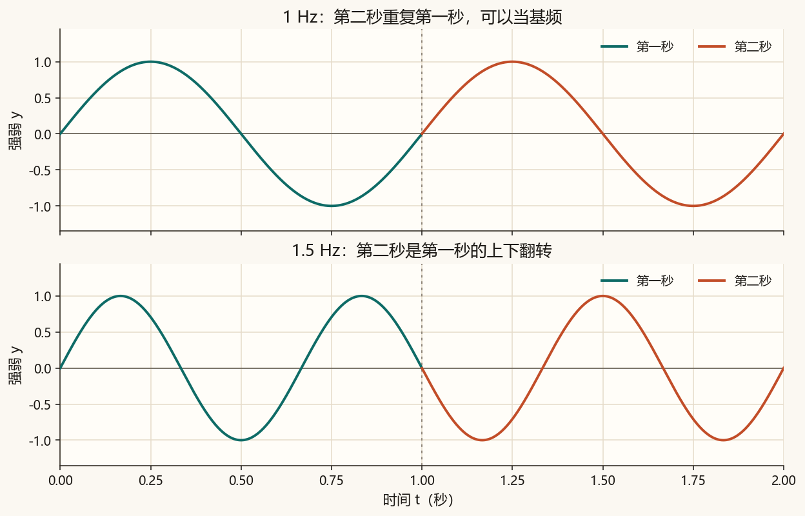
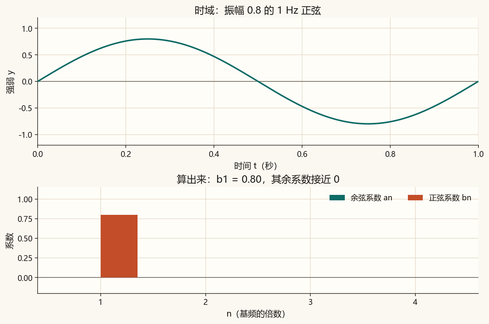
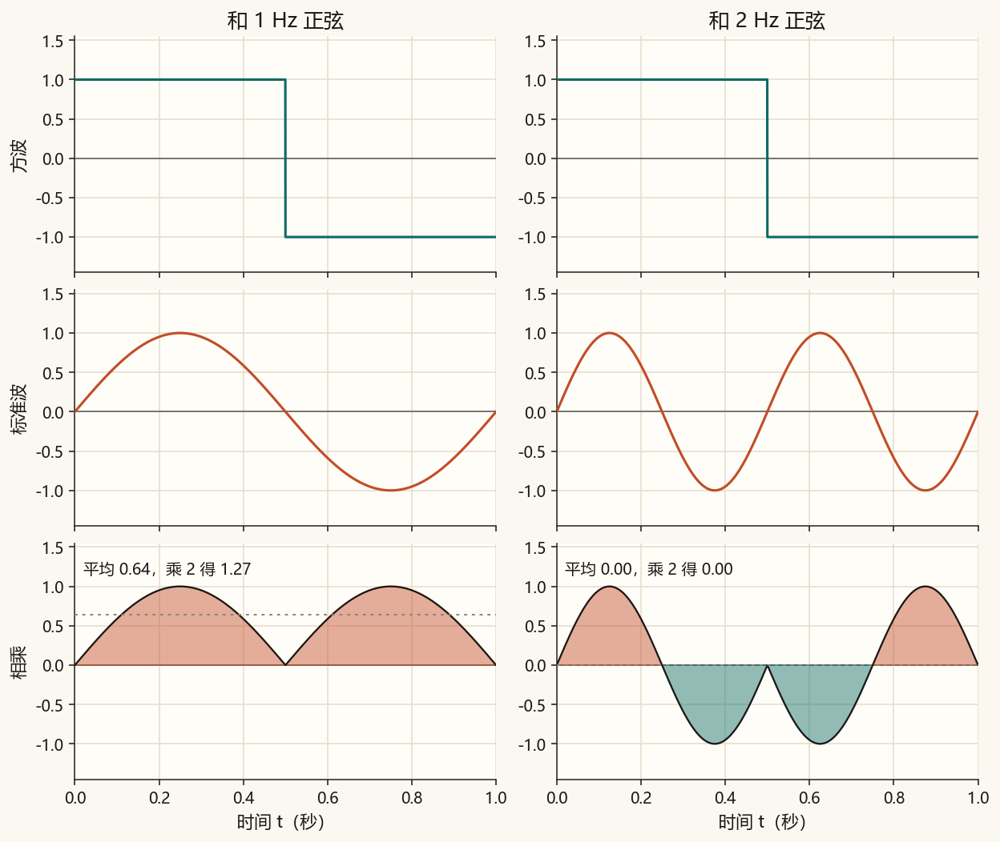
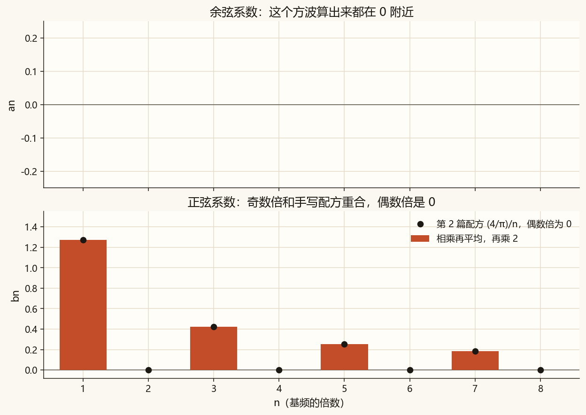
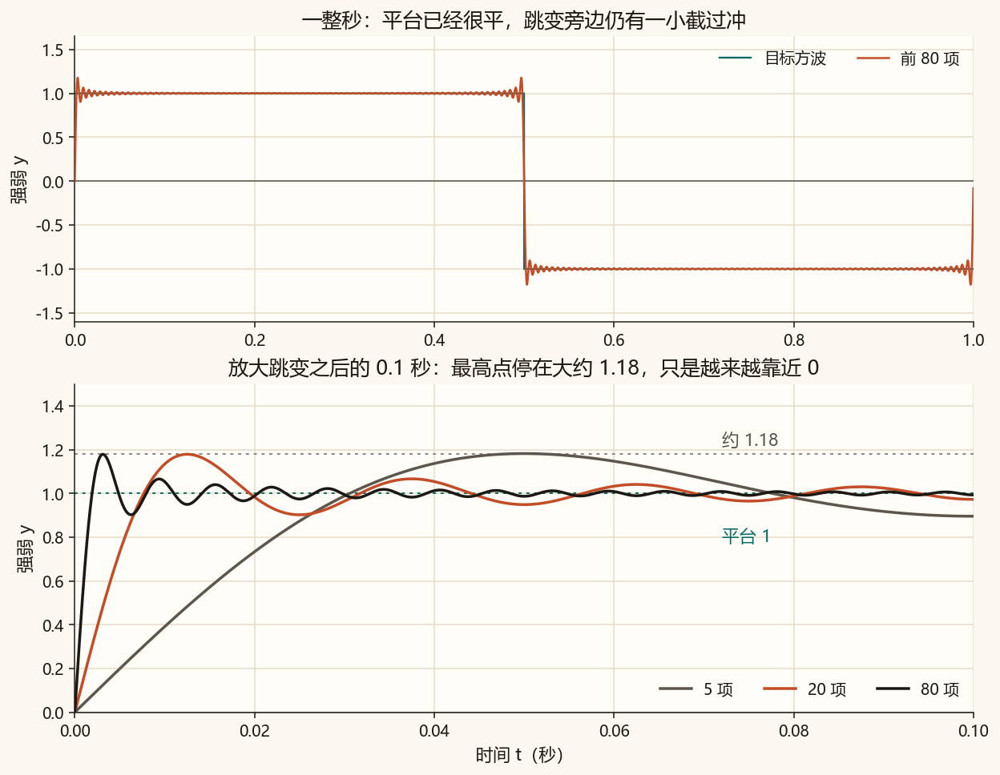
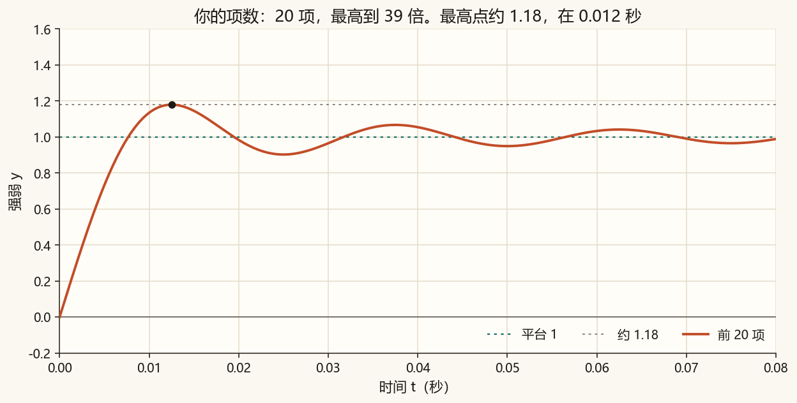

第 4 篇 · 周期信号 · 约 50 分钟
第 2 篇的方波配方是写好的。这一篇换一个问题：一段每秒都重复的波形，它的系数可以算出来。算法只有一句：和标准正弦有多齐。算完再看跳变旁边那一截为什么还在。
方波每 1 秒重复一次。这段重复的长度叫周期，记作 T。基频是
f₀ = 1/T
T = 1 秒时，f₀ = 1 Hz。2 Hz、3 Hz、4 Hz 在 1 秒里正好走完整数圈，下一秒会照原样再来一遍，所以它们可以拿来拼这个周期的波形。1.5 Hz 在第二秒会上下翻转，拼不出「每一秒都一样」的形状。

所以傅里叶级数的频率是 f₀、2f₀、3f₀…… 第 2 篇方波用的 1 倍、3 倍、5 倍，就是这里的 1 Hz、3 Hz、5 Hz。T 若改成 0.5 秒，基频就是 2 Hz，整数倍跟着变成 2 Hz、4 Hz、6 Hz。
一条周期波形写成这些正弦、余弦的和：
y(t) = a₀/2 + Σ (aₙ cos(2π n f₀ t) + bₙ sin(2π n f₀ t))
Σ 表示 n = 1、2、3…… 都加进去。每个字母都是一个能算的数：
算法：把波形和这条标准波逐点相乘，在一个周期里求平均，再乘 2。乘 2 是因为正弦自己和自己相乘，平均正好是 1/2；乘完 2，振幅是多少，系数就是多少。
算例。 y = 0.8 sin(2π t)，T = 1。它和自己的 1 Hz 正弦相乘，平均是 0.8 × 1/2 = 0.4，再乘 2，得到 b₁ = 0.8。和余弦相乘会正负抵消，a₁ = 0。和 2 Hz 正弦相乘，平均也是 0，b₂ = 0。

把第 2 篇那个方波送进同一个算法。先看相乘以后的面积。

1 Hz 正弦在方波为正的那半秒里也大体为正，在方波为负的那半秒里也大体为负，乘积就一直是正的。2 Hz 正弦在方波的正半秒里就完成了「上又下」，自己抵消了。3 Hz、5 Hz 和 1 Hz 一样对得齐，只是更矮；4 Hz、6 Hz 和 2 Hz 一样抵消。余弦和这个方波相乘，一个周期里也会正负抵消。
| n | 余弦 an | 正弦 bn | 第 2 篇配方 |
|---|---|---|---|
| 1 | 0 | 1.273 | 4/π ≈ 1.273 |
| 2 | 0 | 0 | 0 |
| 3 | 0 | 0.424 | 4/(3π) ≈ 0.424 |
| 4 | 0 | 0 | 0 |
| 5 | 0 | 0.255 | 4/(5π) ≈ 0.255 |

第 3 篇的频谱柱，到这里有了算法：柱高就是这些系数的绝对值。这个方波的余弦系数是 0，频谱上只剩正弦那一排奇数倍。把方波在时间上挪一挪，余弦系数就不再全是 0；第 3 篇已经见过，同一组振幅、不同的起点，波形会变。
系数知道了，把前若干项加回去，就是第 2 篇看过的那条橙色曲线。项数增加，平台中段靠近 1。跳变旁边仍有一截冲过平台。这一截叫吉布斯现象。

方波从 −1 跳到 1，跳变高度是 2。过冲大约是跳变高度的 9%，也就是 0.18 左右，所以最高点停在大约 1.18。5 项时这个最高点在 0.05 秒，20 项时在 0.012 秒，80 项时在 0.003 秒。高度几乎不动。
只加 1 项时，最高点大约是 1.27，那是整条正弦的波峰，落在 0.25 秒，还不是这截窄尖角。
横轴会跟着项数缩短，让尖角留在画面里。青色线是平台 1，灰色虚线是 1.18。下面只画到 15 倍；更高的奇数倍更矮，已经加进上面的曲线。偶数倍的系数是 0，这里不画柱。
先停在 5 项，看最高点大约 1.18，位置在 0.05 秒。再拖到 20、40：尖角变窄，往 0 秒靠，高度仍在 1.18 附近。拖回 1 项时，最高点变成大约 1.27，在 0.25 秒。
图用 1 Hz，是为了看清尖角。声音把基频放到 220 Hz。5 项最高到 1980 Hz，40 项最高到 17380 Hz，仍低于采样率的一半。耳朵主要听到多出来的高次谐波：40 项更尖、更亮。过冲的高度要看图。
前 5 项。
前 40 项。
一个周期被切成很多小段，时间取每段中点。系数就是相乘、求和、再乘 2：
dt = t[1] - t[0]
# T 是周期。n = 1, 2, 3, ...
bn = 2 * np.sum(y * np.sin(2 * np.pi * n * t / T)) * dt / T
an = 2 * np.sum(y * np.cos(2 * np.pi * n * t / T)) * dt / T完整脚本在 code/ch04_series.py。课文里的 80 项图不读文件顶部的项数。
python code/ch04_series.py终端里应出现「自检通过」，以及「5、20、80 项在跳变旁的最高点分别约为 1.18、1.18、1.18」。还会打印前 8 个系数，bn 应和第 2 篇配方一致。课文图是 ch04_period.png、ch04_calibrate.png、ch04_align.png、ch04_coeff.png、ch04_gibbs.png。ch04_my_gibbs.png 和 ch04_square_mine.wav 只跟随 N_TERMS。
若终端中文是乱码，先执行 chcp 65001。图和 wav 照样会保存。
code/ch04_series.py，把 N_TERMS = 20 改成 5，运行。打开 ch04_my_gibbs.png：最高点仍约 1.18，位置大约在 0.05 秒，尖角比较宽。刷新本页听 ch04_square_mine.wav。N_TERMS 改成 40，再运行。尖角更窄，更靠近 0 秒，高度仍约 1.18。听起来比 5 项更尖。20，再运行一次。
你的声音：
N_TERMS 请用 1 到 40 的整数。40 项时最高谐波是 79 × 220 Hz，仍低于采样率的一半。
基频 f₀ = 1/T = 1 Hz。配方里用 1 Hz、2 Hz、3 Hz 这样的整数倍。1.5 Hz 的第二秒是第一秒的上下翻转，拼不出每一秒都一样的形状。
b₁ = 0.8，a₁ = 0。方波的 b₁ = 4/π ≈ 1.273，b₂ = 0。b₁ 来自图 4-3 那个平均 0.64 再乘 2。
高度停在大约 1.18，位置从大约 0.05 秒挪到大约 0.003 秒，尖角变窄。平台中段则靠近 1。这一截过冲叫吉布斯现象。只加 1 项时的 1.27 是正弦波峰，落在 0.25 秒。
下一篇把同样的「对齐」做成离散傅里叶变换：N 个点进去，N 个频率格子出来，并手算一个很小的例子。